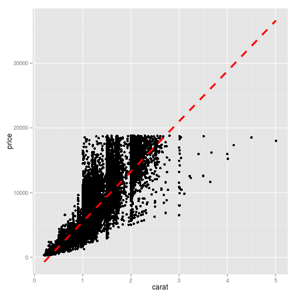
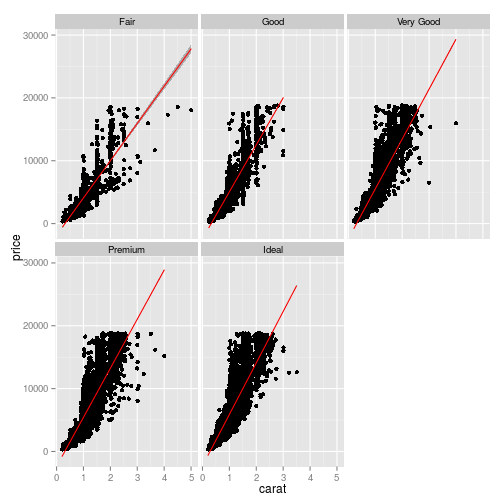
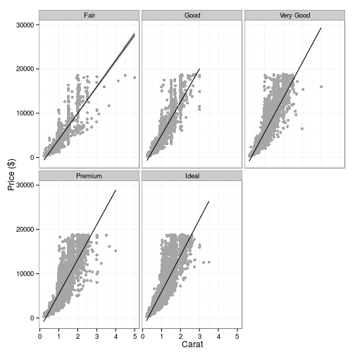
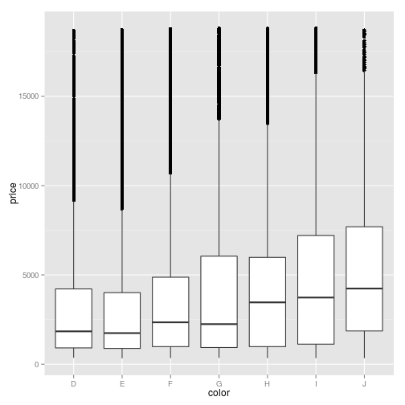
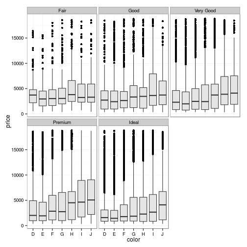
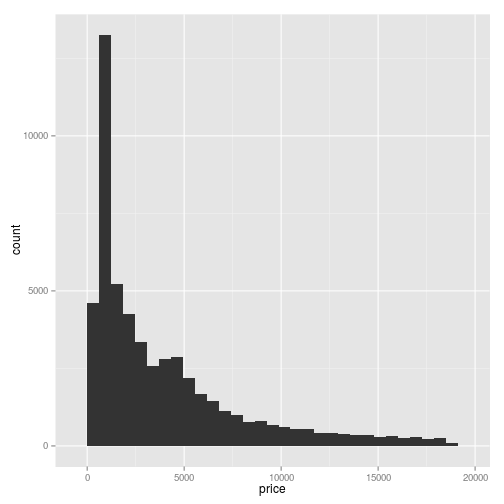

Visualizing data using ggplot2
Now that you've grown familiar with the basics of data manipulation using dplyr and reshape2, the next logical step in our workflow is to visualize the data that we've exhaustively prepared. Be aware that there are plenty of marvellous graphics packages available in R depending on which tasks you'd like to perform. Within the scope of our short course, ggplot2 will do just fine not least because it is closely linked to the previously performed manipulation tasks (maybe because of the same author).
## load 'ggplot2' package
library(ggplot2)
In ggplot2, every plot we want to draw consists of subsequent calls on how
to represent the individual plot components (basically x and y). This means
a much more consistent way of building visualizations as compared, for
instance, to the much more conventional style of lattice, but
it also means that things are rather different from what you might have learned
about syntax and structure of (plotting) objects in R so far.
Note also that the brief examples shown below are mainly taken from Tim's course on Creating publication quality graphs in R. Feel free to browse the text tutorial or the accompanying course slides in case you're not entirely satisfied with the rather shallow introduction given here or if you wish to learn more about lattice-style figures.
Scatter plots
Scatter plots are produced by invoking geom_points. If we wanted to plot
variables 'price' and 'carat' from the 'diamonds' dataset against each other,
the ggplot call would be as follows.
ggplot(aes(x = carat, y = price), data = diamonds) +
geom_point()

Let's look at the above code in a little more detail. The first line is the fundamental definition of what we want to plot. We provide the 'aesthetics' for the plot (aes()) and state that we want the values on the x-axis (y-axis) to represent 'carat' ('price'). The data to take these variables from is the 'diamonds' dataset. That's basically it, and this will not change a hell of a lot in the subsequent plotting routines.
What will change in the code chunks that follow is how we want the relationship between these variables to be represented in our plot. This is done by defining so-called geometries (geom_...()). In this first case we stated that we want the relationship between x and y to be rpresented as points, hence we used geom_point().
For the sake of practicing, let's add another layer to our plot. In order to provide the regression line, for instance, we need a function called stat_smooth(). Note that we also specify the smoothing method and the line colour, size and linetype. se = FALSE tells the function not to display confidence intervals for the moment. See ?stat_smooth for a more detailed overview of costumization possibilities.
ggplot(aes(x = carat, y = price), data = diamonds) +
geom_point() +
stat_smooth(method = "lm", se = FALSE,
colour = "red", size = 1.5, linetype = "dashed")

If we wanted to provide a plot showing the relationship between 'price' and 'carat' in panels representing the quality of the diamonds, we need what in ggplot2 is called facetting (similar to panels in lattice). To achive this, we simply repeat our plotting call from earlier and add another layer to the call which does the facetting. Note that this time, confidence intervals are included via se = TRUE and fill-ed grey.
ggplot(aes(x = carat, y = price), data = diamonds) +
geom_point() +
stat_smooth(method = "lm", se = TRUE,
colour = "red", fill = "grey35") +
facet_wrap(~ cut)

One thing that some people dislike about the default settings in ggplot2 is the grey background of the plots. This grey background is, in our opinion, a good idea when colors are involved as it tends to increase the contrast of the colors. If, however, the plot is a simple black-and-white scatter plot, a white facet background seems more reasonable. We can easily change this using a pre-defined theme called theme_bw(). Note that in the following, we also change the axis titles (labs) and the number of rows (nrow) and columns (ncol) into which the facets should be arranged - simple and straightforward.
ggplot(aes(x = carat, y = price), data = diamonds) +
geom_point(colour = "grey65") +
stat_smooth(method = "lm", se = TRUE,
colour = "black", fill = "grey35") +
facet_wrap(~ cut, nrow = 2, ncol = 3) +
labs(x = "Carat", y = "Price ($)") +
theme_bw()

Box and whisker plots
Box and whisker plots drawn with ggplot2 look quite nice and, in contrast to lattice, do not require the user to exhaustively modify graphical parameter settings in order to get an acceptable result. But see for yourselves (using the default settings).
## basic frame
p <- ggplot(aes(x = color, y = price), data = diamonds)
## add boxplot
p_bw <- p + geom_boxplot()
## print
print(p_bw)

Note that this time, we stored the basic frame of our plot in a variable p and added the desired geom_boxplot() layer afterwards. In order to keep a clear structure (and not to get in trouble with Tim), this is possibly the ideal way to create graphics using ggplot2 - so stick to it!
As we've already seen, the facetting is also just one more line of code.
## add faceted boxplots
p_bw <- p +
geom_boxplot(fill = "grey90") +
facet_wrap(~ cut) +
theme_bw()
print(p_bw)

Histograms and densityplots
Much like with the box and whisker plot, ggplot2 produces quite nice histograms and densityplots when using the default settings.
## new basic frame
p <- ggplot(aes(x = price), data = diamonds)
## add histogram
p_hist <- p + geom_histogram()
print(p_hist)

When working with ggplot2 densityplots, it is quite easy to fill the area under the curve which really contributes to the visual representation of the data.
## add densityplot
p_dens <- p + geom_density(fill = "black", alpha = 0.5)
print(p_dens)

In addition to theme_bw which you already encountered before, there's a lot of different theme settings that let you customize your plots at will. For instance, let us slightly rotate the tick labels on the x-axis and move them horizontally a little bit. element_text is an essential function to achieve such things as it allows you to modify, amongst others,
- font
familyandface(e.g. 'bold'), - text
colourandsize, - horizontal (
hjust) and vertical (vjust) justification as well as angleof the tick labels.
(In case you prefer American English, element_text also understands color instead of colour ☺)
p_dens <- p +
geom_density(fill = "black", alpha = 0.5) +
facet_grid(color ~ cut) +
theme_bw() +
theme(axis.text.x = element_text(angle = 45, hjust = 1))
print(p_dens)